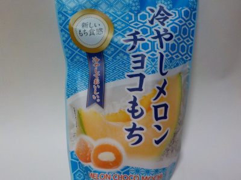

世起の冷やしメロンチョコもち。
2022/04/26

パッケージを見て想像した通りの商品でした。
夕張メロン風の餅とホワイトチョコ味です。期待を裏切りませんでした。
冷蔵庫に入れておいて、ちょっと甘いものが欲しい時に食べようと思います。
愛媛県伊予郡松前町北川原1240-1
2022/04/26

パッケージを見て想像した通りの商品でした。
夕張メロン風の餅とホワイトチョコ味です。期待を裏切りませんでした。
冷蔵庫に入れておいて、ちょっと甘いものが欲しい時に食べようと思います。